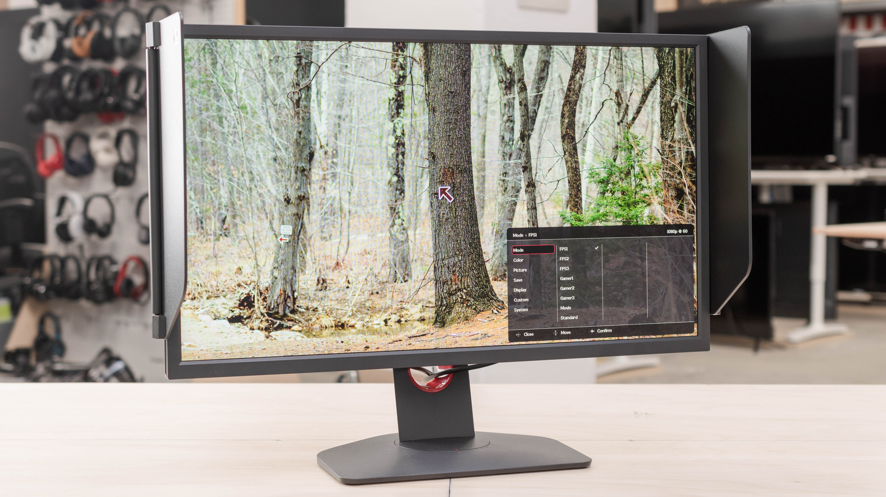
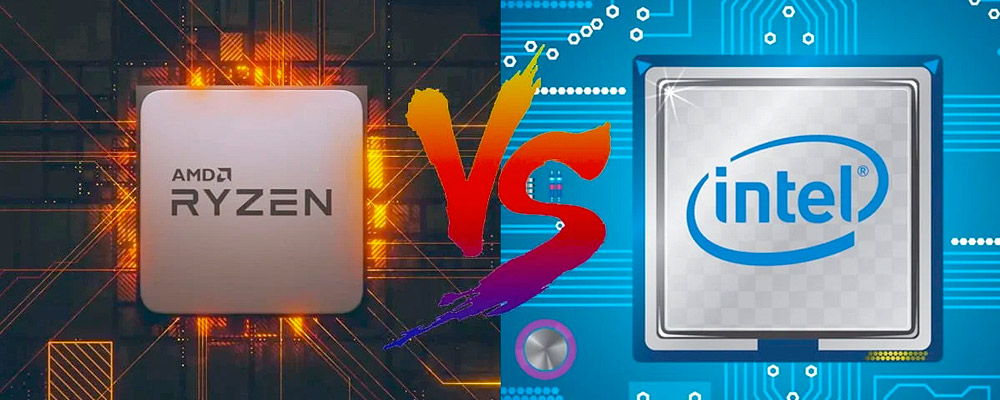

BenQ ZOWIE XL2566K
El ZOWIE XL2566K de BenQ es el modelo estrella de la gama de monitores para juegos ZOWIE de BenQ, situado por encima del ZOWIE XL2546K de BenQ
Mas

Intel vs AMD 2024
Elegir entre los mejores procesadores del mercado Intel o AMD puede no ser una tarea sencilla, para ayudarte en tu elección hemos preparado esta guía con los mejores modelos para cada necesidad.
Mas
PlayStation 5
PlayStation 5, análisis: Sony apuesta por la innovación con un mando DualSense que es el compañero perfecto para un hardware muy potente
Mas